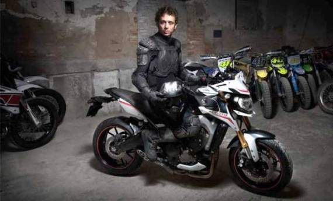

gilamotor.com- Info yang kami dapat kini mengenai PT Yamaha Indonesia Motor Manufacturing (YIMM) yang sebentar lagi akan meluncurkan motor terbarunya selain Yamaha vixion Terbaru 2015, motor terbaru yamaha ialah motor bergenre naked bike yang dipromosikan oleh pembalap Valentino Rossi.

Motor tersebut ialah Yamaha MT-09 Terbaru 2015, moge yang satu merupakan moge yang sangat terkenal dinegara Eropa dan Amerika. Menurut informasi yang kami dapat Yamaha MT-09 Terbaru 2015, sudah mulai bisa dipesan karena ada data mengenai pembeli 4 unit moge dari konsumen Indonesia.
Harga dan Spesifikasi New Yamaha MT-09 2015
Mengenai harga New Yamaha MT 09 2015 dibandrol dengan harga yang cukup tinggi yakni Rp 250-260 juta. Dengan mesin berkapasitas 850 cc 3 silinder DOHC 4 valve liquid cooled. Mesin tersebut mampu menyemburkan tenaga mencapai 84,6 Kw pada 10.000 rpm dan torsi 87,5 Nm pada 8.500 rpm.
Motor terbaru Yamaha ini didesain khusus untuk para penggemar touring sehingga memiliki tampilan dan memiliki dimensi yang cukup tinggi dan panjang, yakni panjang 2.075 mm, lebar 815 mm serta tinggi 1.135 mm. Dengan mengusung teknologi injeksi MT-09 dipastikan akan lebih efisien bakan bakar.
Dengan harga yang relatif tinggi, tak heran jika New MT-09 2015 akan dibekali dengan beberapa fitur dan teknologi canggih seperti sistem pengereman ABS, dual hydrolic disc brake serta teknologi LED dibagian lampu depan.
Namun sayangnya YIMM belum bisa memberitahu kapan persisnya motor Yamaha MT-09 Terbaru 2015 akan diluncurkan di Indonesia.